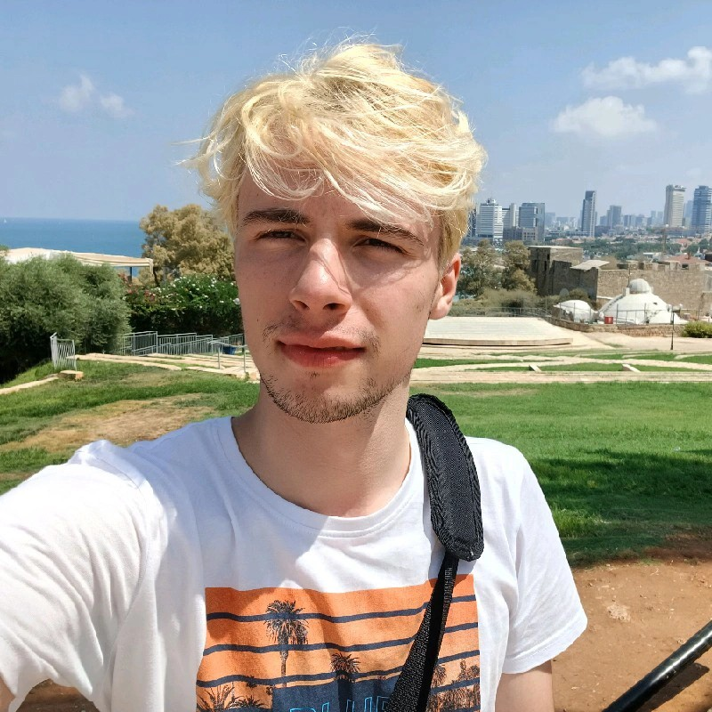

About Me
Antun Simić

univ. bacc. ing. comp.
LinkedIn
GitHub
I am a 1st year graduate student of Software engineering at the Faculty of Engineering in Rijeka. My
professional development is directed towards a career in full-stack development. Therefore
I see my future in working for companies that
inspire me to always look for a better solution in development, such as
Degordian or Infinum.
Work experience
Sedam IT, Zagreb
Packet generator analyst
(July 2023 - August 2023)
- research into open source packet generators on the market
- finding the best fit for the company
- analysis and testing of features
Education
Faculty of Engineering, University of Rijeka
October 2021 - September 2024
Skills
Programming languages
Languages
- English - B2 (TOEFL iBT - 114/120, 2024)
- German - C1 (DSD II, 2020)
Awards
- STEM scholarship (2021, 2022, 2023)
- Sedam IT scholarship (2022, 2023)